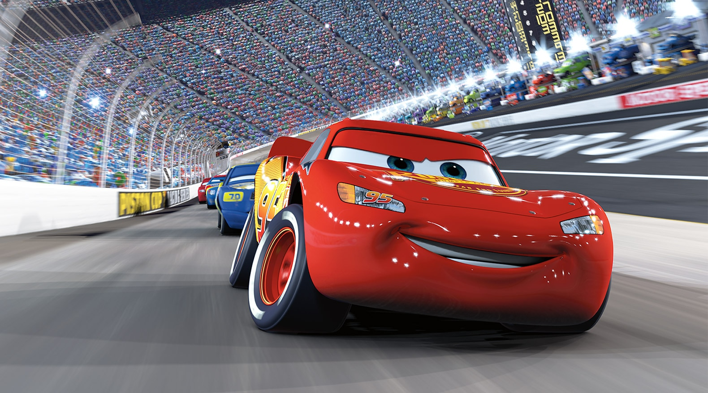

About Lightning
Lightning McQueen is a legendary red racecar who won multiple Piston Cups and earned the respect of his fellow racers through his determination and growth.
Lightning on the track
McQueen's Characteristics
- He's got fast wheels
- His enemies marvel his speed
- He's got the best engine
Lightning's Friends
Lightning has some great friends, whom he mostly met in radiator springs. Click on the links below to read more about them.